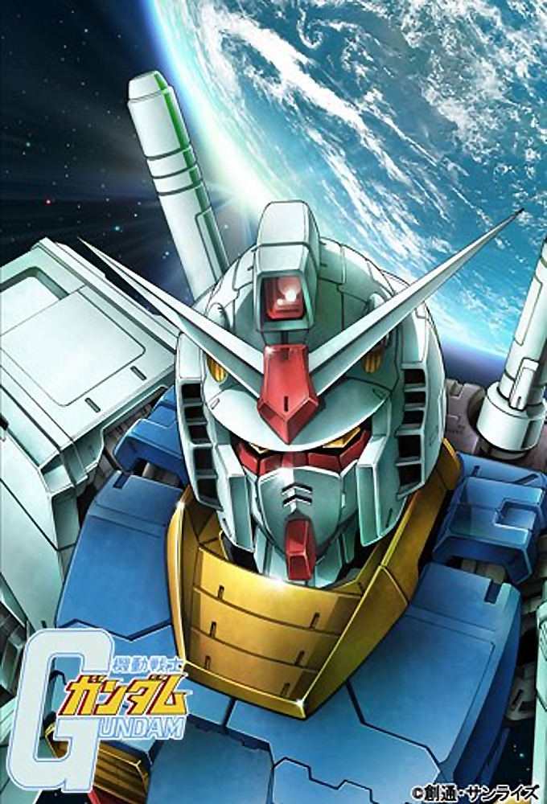
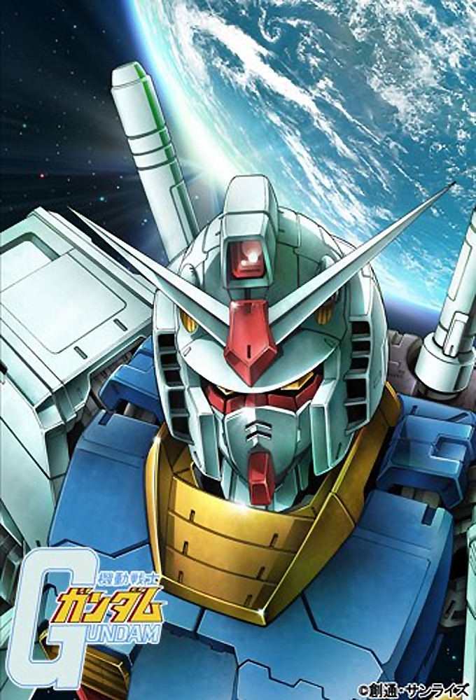
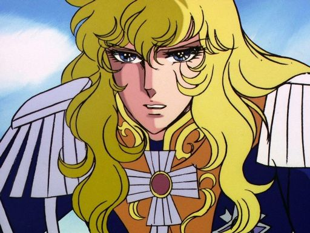

It has been a decade into anime so what's cool nowadays?
Well, various things actually; from slice of life comedy anime
to dramatic sports anime, there were so many to choose from!
...Well, not quite, while there were many anime that aired during
the times, the real limit was animation. Cel animation was very
difficult to do, and very time consuming. Most studios would dedicate
themselves to create one anime for a long period of time, then when the
story finally ends, they start the next one on their bucket list.
The following images are of the most popular anime of the time:
 

(From left to right) The anime being: Lupin III,
The Rose of Versailles and Mobile Suit Gundam.
First, in the anime Lupin III, we are shown the one of the first
beautiful woman in anime who is loved by males, and aspiration of woman in
Japan, Fujiko Mine. She was seen as a great woman, but not really similar to
how moe is today.
Second, in the anime The Rose of Versailles, Oscar is a strong woman who was raised as a boy and becomres the love interest of the men that serves and got to know her. While charming in her own right, she also does not fit the mold of moe.
Third, in the anime Mobile Suit Gundam, we are thrown in a giant war that lasts an entire year, and our main characters are civilians who are made to fight and help end the war. Not only men, but woman are also fighting in the war, to show the importance of man power over gender. Similarly to both Lupin III and Versailles, the woman are strong, however, to show realism in the anime Yoshiyuki Tomino, the director and creator of Gundam, added in scenes of bathing, which after finding many screen captures of the woman of Gundam, studios began to add more attractive females inside battle anime.